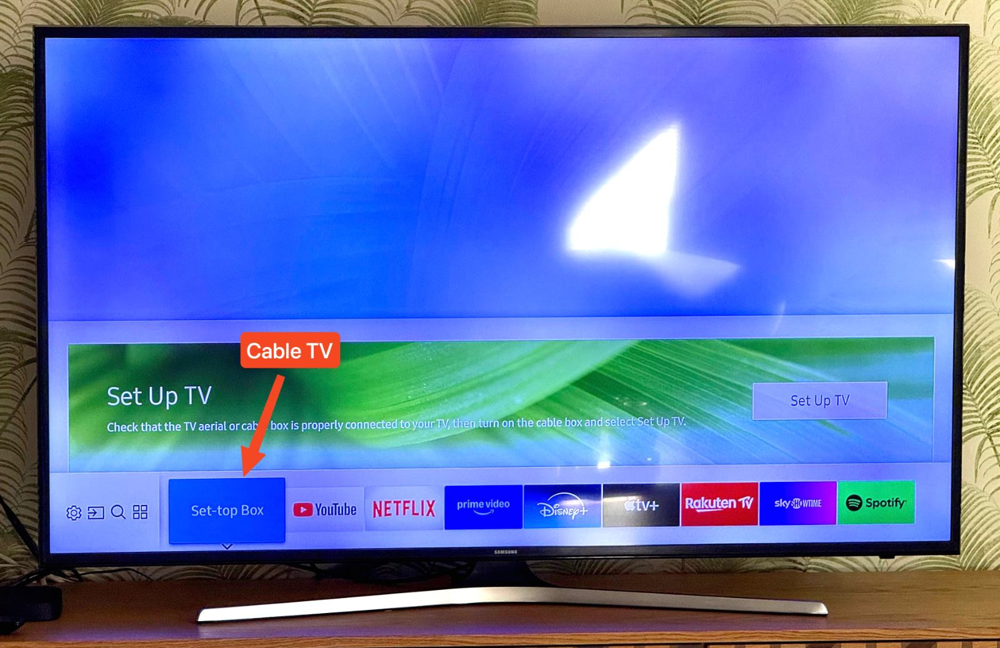

There are about 150 channels in different languages are available to watch. There are two remote controls:
1. Samsung TV remote for turning TV on/off, control volume, watch YouTube, Netflix, etc. and everything else, except Cable TV.
2. Vodafone/One Set-top Box remote for turning on/off cable TV channels and switching them
Set-top Box (Cable TV channels) is on HDMI1 port. To switch between Cable TV channels and Youtube/Netflix/Disney/etc press HOME (🏠️) button on Samsung remote, use arrow buttons to switch to desired output/app and confirm it pressing OK button.
To watch Cable TV you need to press “On” button on Set-top box remote (so the status light will switch from red to white), and press "On" button on Samsung TV remote. If there is no picture/no Cable TV, then press HOME (🏠️) button on Samsung TV remote and choose Set-top Box.
Be aware, to switch channels you need to use Set-top Box remote with P + and - buttons. The volume can be controlled from both remotes, however I would recommend to use Samsung one.
If you can't make Cable TV working, please be sure that the indicator light on Set-top Box is white and the Set-top Box output set on TV (by pressing HOME (🏠️) button on Samsung remote and choosing Set-top Box output.

The Set-top Box indicator should be white if it’s on (and red if it’s off). If it’s on but still don’t show the picture you can plug out the power cable, wait two seconds and plug it back. After booting process (3-5 min) it should work.
You can either cast from a phone to the TV (it supports Google Cast; device name [TV]Living Room), or sign in to any streaming service on the TV’s home screen with your personal credentials. I don't provide my login details for these services as they are mostly in Hungarian ☺️